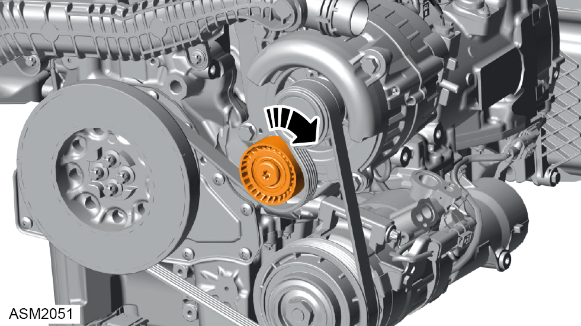
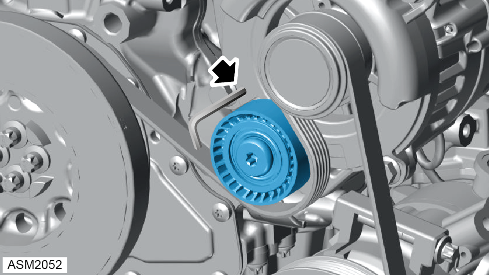
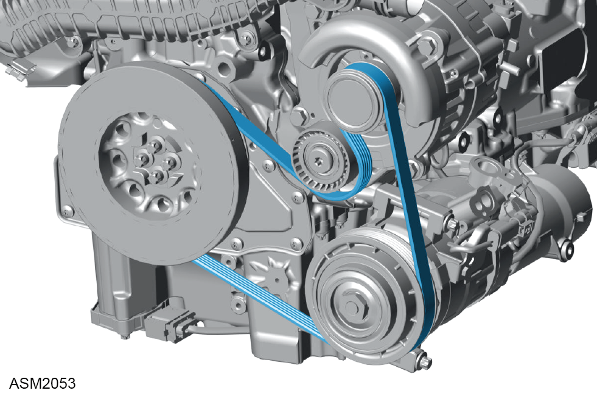

Auxiliary Drive Belt - 4 Cylinder
Print
Operation Code: 41.03.02-02
Removal
- Remove rear undertray. Refer to procedure.
- Remove rear wheel arch liner - right side.
NOTE: Procedure is the same as left side component.

- Rotate belt tensioner clockwise to relieve tension from drive belt.
NOTE: If reusing belt, take note of and reinstall in the original direction
NOTE: Vehicle not shown for clarity.

- Use allen key to lock tensioner in fully released position.

- Remove belt from alternator pulley.
- Remove belt from AC compressor pulley.
- Remove belt from crankshaft pulley.
- Remove auxiliary drive belt.
Installation
- Install belt to crankshaft pulley.
- Install belt to AC compressor pulley.
- Install belt to alternator pulley.
- Remove allen key.
- Rotate belt tensioner counter clockwise.
- Check belt position.
- Start engine and observe belt and pulley operation and direction.